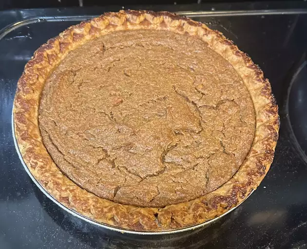

Sweet Potato Pie

Description
This sweet potato pie recipe was shared with me by a special friend in Atlanta, GA. It has long been a favorite, and everyone who tastes it says it is the best they've ever had.
Ingredients
- Sweet potato
- Butter
- Sugar
- Milk
- Eggs
- Cinnamon, Nutmeg and Vanilla
- Unbaked Ple Crust
Steps
- Boil and drain the sweet potato, then peel off the skins.
- Use a hand mixer or blender to combine the sweet potato flesh with the other ingredients.
- Bake the mixture in the unbaked pie crust and bake until a knife or toothpick comes out clean.